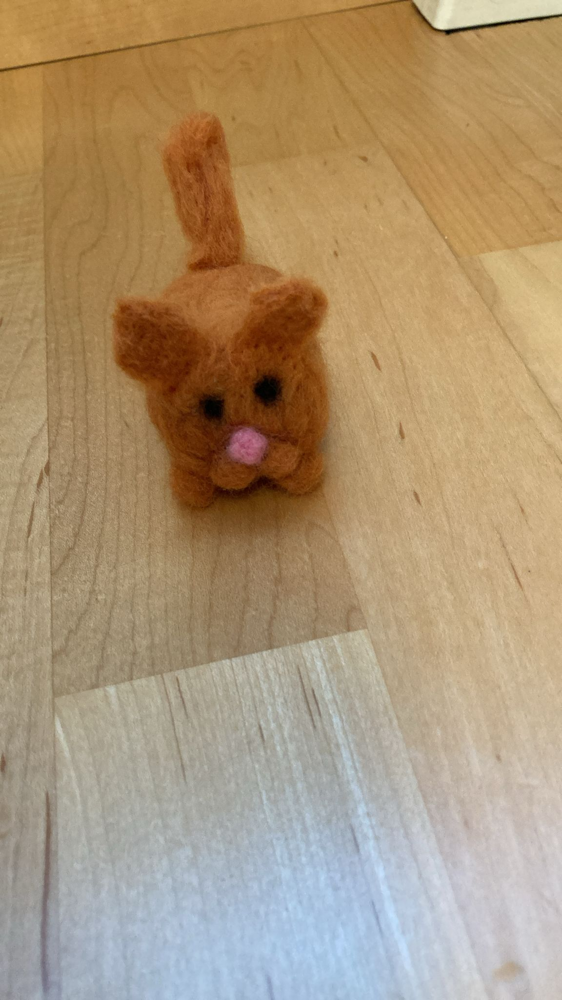
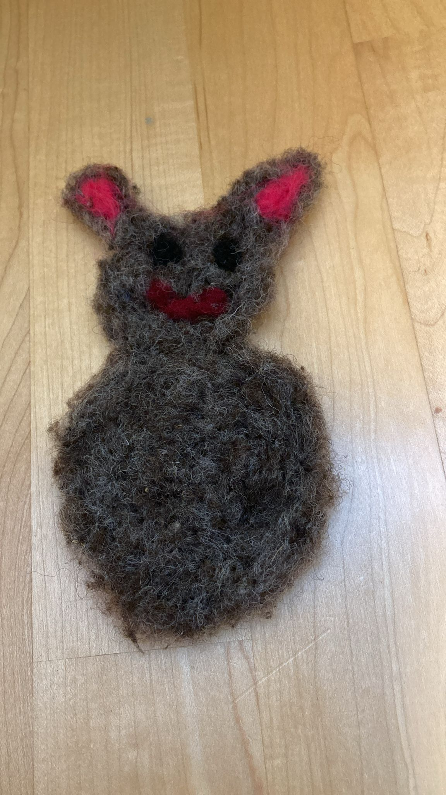
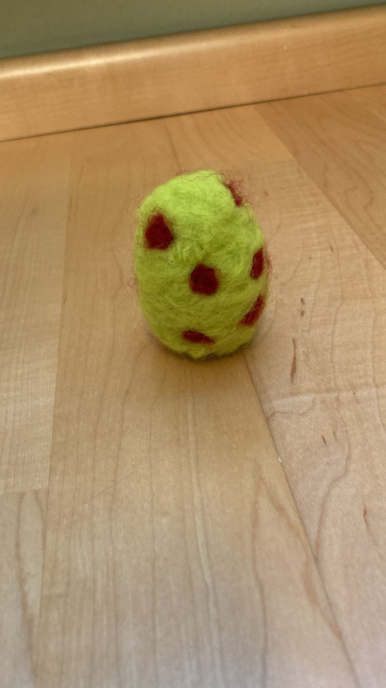
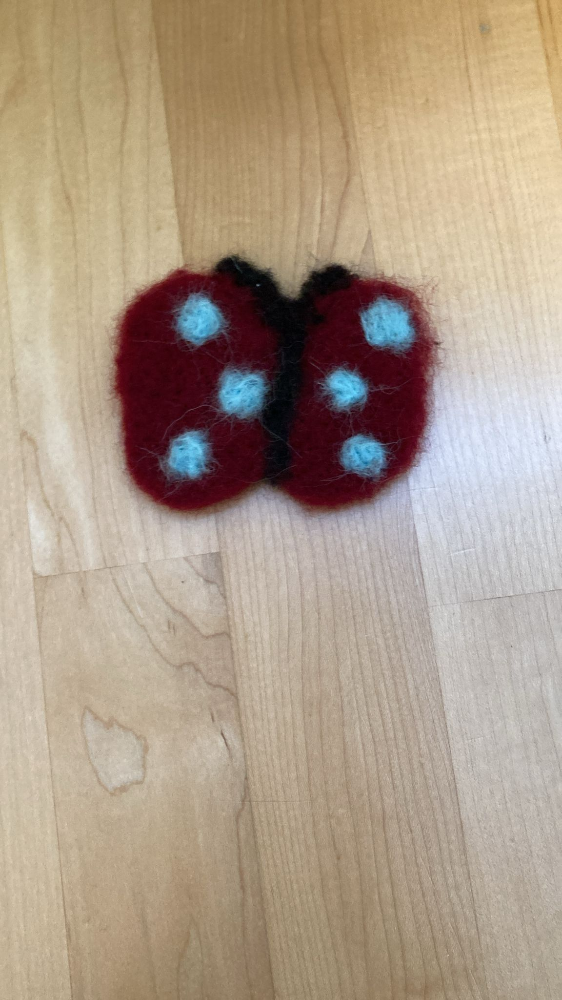

UnikatWeich, bunt und handgemacht
Filzfiguren
Kleine Figuren aus Filz, mit viel Geduld und Freude von Bianca & Diana gemacht.
Diese Seite ist ein kleines Projekt von Bianca & Diana. Die Stücke entstehen nach Lust, Zeit und Material und sind vorerst nur für Familie und Freunde gedacht.
Aktuelle kleine Schätze
Welche Filzfigur darf es sein?

Handgemacht
Saisonal
BuntWunschfigur
Du hast eine eigene Idee?
Andere Farbe, anderes Tier oder eine kleine Dekofigur? Für solche Wünsche gibt es die Auftrag-Seite.